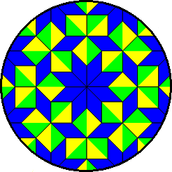
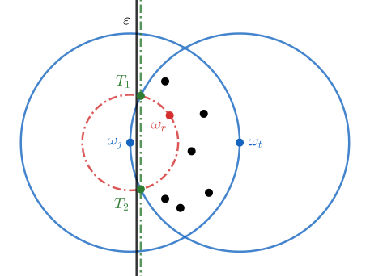

❒ Map
❒ Index
Welcome to my Webpage!

Hello! My name is Anastasios (Tassos) Fragkos and I'm a postgraduate student of Pure Mathematics in NKUA. Here you can mainly find:
- In the "Home" tab, things I'm working on or currently studying.
- In the "Notes and Books" tab, lecture notes or books that I have written, as well as some recomendations of others' material. I will try to upload some of the \(\LaTeX\) templates I'm using.
- In the "News and Seminars" tab, a list of Seminars or Conferences that are taking place, mainly in Greece.
A poem of Vrettakos
Χωρὶς τὴ μαθηματικὴ τάξη, δὲν στέκει τίποτε: Οὔτε οὐρανὸς ἔναστρος, οὔτε ρόδο. Προπαντὸς ἕνα ποίημα. Κι εὐτυχῶς ὅτι μ᾿ ἔκανε ἡ μοῖρα μου γνώστη τῶν μουσικῶν ἀριθμῶν ὅτι κρέμασε μίαν ἀχτίνα ἐπὶ πλέον τὸ ἄστρο τῆς ἡμέρας στὴν ὅρασή μου καὶ κάνοντας τὰ γόνατά μου τραπέζι ἐργάζομαι, ὡς νά ῾ταν νὰ φτιάξω ἕναν ἔναστρο οὐρανό, ἢ ἕνα ρόδο.
Νικηφόρος Βρεττάκος.
Study Group, winter semester 2024-25
The purpose of this study group (which will be organized for the first time in the winter semester of 2024-25), is to get in touch with mathematical subjects that are not taught, or are no longer taught, in our department in NKUA. It is mainly aimed for postgraduate students, but undergraduate students, members of the university or generally anyone else who is interested, are also welcome. The idea is that every week students make two presentations on topics of their interest. Topics may change each month to provide variety (the length of each topic will vary between one (1) and three (3) presentations).
Webpage for the Study Group (winter semester 2024-25)
Festum-π (2024)

Isolating points in \(\mathbb{R}^n\)
Lemma: Let \(\{ω_k\}_{k=1}^m\) be a finate collection of points in \(\mathbb{R}^n\). There exists a hyperplane \(H \simeq \mathbb{R}^{n-1}\) of \(\mathbb{R}^n\) which separates the space into two sets \(Χ,Ψ\), with the property: $$ω_j \in X \backslash H ~\&~ \{ω_k\}_{k \neq j} \subset Ψ \backslash H$$ for some \(j \in [m]\).
Proof: We will assume that \(m \geqslant 2\), as the other cases are simple. We consider the functions \(D_k(ω_\ell) = || ω_k - ω_\ell ||_2\) and we chose \(j \in [m]\) so that it maximizes: $$\max \{D_x(ω_t) ~|~ t \in [m]\}$$ (i.e. when \(x=j\) the above maximizes). Basically, for point \(ω_j\), some point \(ω_t\) can be found so the distance \(||ω_j-ω_t||_2\) maximizes in \(\{ω_k\}_{k=1}^m\).

We notice that, by definition of \(ω_j, ω_t\), all the points of \(\{ω_k\}_{k=1}^m\) must be located in close balls \(Β\big(ω_j, D_j(ω_t)\big)\), \(Β\big(ω_t, D_t(ω_j)\big)\), therefore they are located in the intersection: $$Λ = Β\big(ω_j, D_j(ω_t)\big) \cap Β\big(ω_t, D_t(ω_j)\big)$$ (\(Λ\) is from «Λemon»). We choose a point \(ω_r\) for which the distance from \(ω_j\) minimizes, and we notice that: $$\{ω_k\}_{k \neq j} \subset Λ \backslash S\big(ω_j, D_j(ω_r)\big)$$ One step remains for the proof to be complete. The two spheres \(\partial Β\big(ω_j, D_j(ω_t)\big)\), \(\partial Β\big(ω_t, D_t(ω_j)\big)\) intersect in a «sphere of \(\mathbb{R}^{n-1}\)», which we name \(Τ\). Sphere \(Τ\) contains at least \(n-1\) points, so a hyperplane can be defined which contains \(Τ\). Let \(ω_j \in Χ', Ψ'\) be the half-spaces the hyperplane defines in space. We find a (parallel) hyperplane \(ε\), which intersects: $$\big[S\big(ω_j, D_j(ω_r)\big) \cap Λ \cap X'\big] \backslash \{ω_j\}$$ and we notice that \(ε\) is the hyperplane of the Lemma we sought.